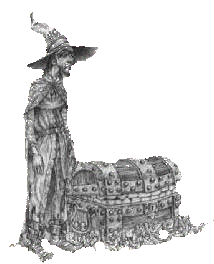

|
||
Le BagageLuggage | ||
En apparence : un coffre assez grand, cerclé de métal qui est capable d'expulser un grand nombre de petits pieds, calleux et cloué au bout, pour l'aider à se déplacer. Il est fait de Poirier savant, un bois de magique qui donne aux objets des caractéristiques semblables au jeu de caractéristiques connut comme "la vie". Probablement l'accessoire de voyage de plus homicide dans la monde. Dans un pays rempli de coffre de voyage, Deuxfleurs le Touriste a du acheter le sien dans un des Tabernea Vagantes - les magasins errants, dont le stock est toujours légèrement suspect. Les Mages de l'Université Invisible ont débattu pendant des années le fait que le Bagage pense réellement, ou que tout simplement il ressente. Le reste de l'Université en est venu depuis longtemps à la conclusion que tout simplement, il mange. Tout ce qu'il désire. Mais heureusement, les Mages en premier. Les constructions en poirier peuvent être utilisées pour faire de petites tâches, comme porter de l'eau ou garder la propriété. Puisque c'est un matériau magique, le poirier savant est imperméable à la magie et, dans les Plaines de Sto, est très recherché pour la fabrication des effets personnels des magiciens, puisque sa capacité pour le stockage de la magie est jusqu'à dix fois plus grande que celle d'autres bois de construction plus courants. Dans le cas du Bagage, construit pour servir d'accessoire de voyage autopropulsé et de garde du corps, un du jeu les caractéristiques de "la vie" se traduisent chez lui par les critères suivant: "la fidélité" et surtout"l'intention meurtrière". Quand il ouvre son couvercle - souvent pour essayer de mordre sournoisement quelque chose ou quelqu'un qu'il considère comme une menace pour son propriétaire - le bagage peut révéler du linge propre ou la rançon d'un roi en or pur ! Cela n'arrive que très rarement, cependant il montre des dents comme le hêtre blanchi et une langue aussi grande q'une feuille de palmier et rouge comme l'acajou. Bien qu'il ait une serrure, il ne peut pas être ouvert quand il est dans une humeur fermée. Le Bagage suivra son propriétaire partout. Le terme un absolu - partout. On a pris l'habitude d'utiliser le poirier savant dans l'Empire Agatéen - où cela est tout à fait commun - pour la fabrication de machins importants que les morts pourraient être certains de garder avec eux. Le Bagage appartient actuellement, ou du moins le suit partout, au magicien Rincevent (dont l'emplacement est inconnu). Son voyage à travers le Disque est marqué par des débris, des gens qui deviennent nerveux au son de pas se dépêchant et de communautés exceptionnellement polies envers les étrangers. Aucun autre article dans la chronique entière d'accessoires de voyage n'a tout à fait une telle histoire empreinte de mystère et de blessures pénibles. Le Bagage peut être décelé dans : La
Huitième Couleur, Le
Huitième Sortilège, Sourcellerie,
| ||